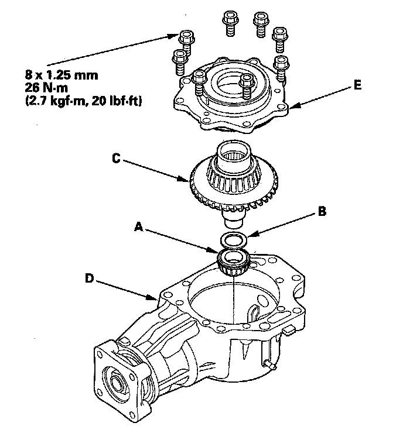

Reassembly
ReassemblySpecial Tools Required
^ Driver, 40 mm I.D. 07746-0030100
^ Driver 07749-0010000
^ Attachment, 65 mm 07JAD-SH30100
^ Companion flange holder 07XAB-0010101
^ Attachment, 78 x 80 mm 07NAD-PX40100
NOTE:
^ While reassembling the transfer assembly:
- Check and adjust the transfer gear tooth contact.
- Measure and adjust the transfer gear backlash.
- Check and adjust the tapered roller bearing starting torque.
^ Coat all parts with transfer fluid (hypoid gear oil) during reassembly.
^ Replace the tapered roller bearing and the bearing outer race as a set if either part is replaced.
^ Replace the transfer hypoid drive gear and the transfer output shaft (hypoid gear) as a set if either part is replaced.
1. Select the 40 mm thrust shim if the transfer output shaft (hypoid gear) is replaced. Calculate the thickness of the 40 mm thrust shim using the formula below, and select the shim from the following table.
FORMULA: A/100-B/100+C = X
A: Number on the existing transfer output shaft (hypoid gear)
B: Number on the replacement transfer output shaft (hypoid gear)
C: Thickness of the existing 40 mm thrust shim
X: Thickness needed for the replacement 40 mm thrust shim
NOTE: The number on the transfer output shaft (hypoid gear) is shown in 1/100 mm.
2. Select the 40 mm thrust shim if the tapered roller bearing on the transfer output shaft (hypoid gear) is replaced. Measure the thickness of the replacement bearing and the existing bearing, and calculate the difference of the bearing thickness. Adjust the thickness of the existing 40 mm thrust shim by the amount of difference in bearing thickness, and select the replacement 40 mm thrust shim.
3. Install the 40 mm thrust shim (A) on the transfer output shaft (hypoid gear) (B) then install the tapered roller bearing (C) using the driver (40 mm I.D.) and the press.
4. Place the tapered roller bearing (A) on the bearing outer race of the companion flange side of the transfer housing, and install the new oil seal (B).
5. Drive the oil seal securely in the transfer housing using the driver and the attachment (65 mm).
6. Install the transfer output shaft (hypoid gear) (A) in the transfer housing (B). Do not install the transfer spacer and thrust washer on the transfer output shaft (hypoid gear).
7. Install the companion flange (A) conical spring washer (B) in the direction shown, and locknut (C) on the transfer output shaft (hypoid gear) (D). Do not install the O-ring and back-up ring.
8. Secure the transfer housing (A) in a bench vise (B) with soft jaws. To prevent damage to the transfer housing, always use soft jaws or equivalent materials between the transfer housing and the vise.
9. Install the companion flange holder on the companion flange.
10. Tighten the locknut while measuring the starting torque of the transfer output shaft (hypoid gear) so the starting torque is within 1.15-1.71 N-m (11.7-17.4 kgf-cm, 10.2-15.1 lbf-in.). Do not stake the locknut in this step.
11. Remove the companion flange holder.
12. Apply Prussian Blue to both sides of the transfer hypoid drive gear teeth lightly and evenly.
13. Install the tapered roller bearing (A) 25 mm thrust shim (B) and transfer drive gear/shaft assembly (C) in the transfer housing (D).
14. Install the transfer cover (E) and secure the cover with the bolts. Do not install the O-ring on the transfer cover.
15. Rotate the companion flange in both directions until the transfer gears rotate one full turn in both directions.
16. Set a dial indicator (A) on the transfer companion flange (B); position dial indicator tip (C) on the direct extension of the bolt hole center (D).
17. Measure the transfer gear backlash.
Standard: 0.06-0.16 mm (0.02-0.06 in.)
18. Remove the transfer cover, transfer hypoid drive gear/shaft assembly, and check the transfer hypoid drive gear tooth contact pattern.
19. If the backlash measurement is out of standard, adjust the backlash with the 40 mm thrust shim and recheck. Do not use more than two 40 mm thrust shims to adjust the backlash.
20. If the transfer gear tooth contact is incorrect, adjust the tooth contact with the 25 mm, 40 mm, or 80 mm thrust shim. Do not use more than two of each thrust shim to adjust the tooth contact.
^ Toe Contact
Use a thicker 40 mm thrust shim to move the transfer output shaft (hypoid gear) away from the transfer hypoid drive gear. Because this movement causes the transfer gear backlash to change, move the transfer hypoid drive gear toward the transfer output shaft (hypoid gear) to adjust the transfer gear backlash as follows:
- Reduce the thickness of the 25 mm thrust shim.
- Increase the thickness of the 80 mm thrust shim by the amount you reduced the thickness of the 25 mm thrust shim.
^ Heel Contact
Use a thicker 40 mm thrust shim to move the transfer output shaft (hypoid gear) toward the transfer hypoid drive gear. Because this movement causes the transfer gear backlash to change, move the transfer hypoid drive gear away from the transfer output shaft (hypoid gear) to adjust the transfer gear backlash as follows:
- Increase the thickness of the 25 mm thrust shim.
- Reduce the thickness of the 80 mm thrust shim by the amount you increased the thickness of the 25 mm thrust shim.
^ Flank Contact
Use a thicker 25 mm thrust shim to move the transfer hypoid drive gear away from the transfer output shaft (hypoid gear). Flank contact must be adjusted within the limits of the transfer gear backlash. If the backlash exceeds the limits, adjust as described under Heel Contact.
^ Face Contact
Use a thinner 25 mm thrust shim to move the transfer hypoid drive gear toward the transfer output shaft (hypoid gear). Face contact must be adjusted within the limits of the transfer gear backlash. If the backlash exceeds the limits, adjust as described under Toe Contact.
21. Remove the transfer cover (A) transfer hypoid drive gear/shaft assembly (B) 25 mm thrust shim (C) and tapered roller bearing (D) from the transfer housing (E) after adjusting the transfer gear backlash or transfer gear tooth contact.
22. Secure the transfer housing (A) in a bench vise (B) with soft jaws. To prevent damage to the transfer housing, always use soft jaws or equivalent materials between the transfer housing and the vise.
23. Install the companion flange holder on the companion flange, then loose the locknut.
24. Remove the companion flange holder.
25. Remove the locknut (A) conical spring washer (B) and companion flange (C) from the transfer output shaft (hypoid gear) (D).
26. Remove the transfer output shaft (hypoid gear) from the transfer housing.
27. Install the thrust washer (A) and the new transfer spacer (B) on the transfer output shaft (hypoid gear) (C) in the direction shown, and install them in the transfer housing (D).
28. Coat the threads of the locknut and transfer output shaft (hypoid gear) with transfer fluid (hypoid gear oil).
29. Install the companion flange (A) new O-ring (B) back-up ring (C) new conical spring washer (D) and new locknut (E) on the transfer output shaft (hypoid gear) (F). Install the conical spring washer in the direction shown.
30. Secure the transfer housing (A) in a bench vise (B) with soft jaws. To prevent damage to the transfer housing, always use soft jaws or equivalent materials between the transfer housing and the vise.
31. Install the companion flange holder on the companion flange.
32. Tighten the locknut while measuring the starting torque of the transfer output shaft (hypoid gear) so the starting torque is within 1.15-1.71 N-m (11.7-17.4 kgf-cm, 10.2-15.1 lbf-in.).
Tightening Torque:
108-294 N-m
(11.0-30.0 kgf-m, 79.6-217 lbf-ft)
Starting Torque:
1.15-1.71 N-m
(11.7-17.4 kgf-cm, 10.2-15.1 lbf-in.)
NOTE:
^ Rotate the companion flange several turns to seat the tapered roller bearings, then measure the starting torque.
^ If the starting torque exceeds 1.71 N-m (17.4 kgf-cm, 15.1 lbf-in) replace the transfer spacer and reassemble the parts. Do not adjust the torque with the locknut loose.
^ If the tightening torque exceeds 294 N-m (30.0 kgf-m, 217 lbf-ft) replace the transfer spacer and reassemble the parts.
33. Remove the companion flange holder.
34. Stake the locknut into the transfer output shaft (hypoid gear) in depth (A) of 0.7-1.2 mm (0.03-0.05 in.) using a 3.5 mm punch (B).
35. Install the tapered roller bearing (A) 25 mm thrust shim (B) and transfer hypoid drive gear/shaft assembly (C) in the transfer housing (D).

36. Temporarily install the transfer cover (E) without the O-ring, and secure the cover with the bolts.
37. Secure the transfer housing (A) in a bench vise (B) with soft jaws. To prevent damage to the transfer housing, always use soft jaws or equivalent materials between the transfer housing and the vise.
38. Rotate the companion flange several turns to seat the tapered roller bearings.
39. Measure the starting torque at the companion flange (C) with a torque wrench (D) and a socket (E).
Standard: 2.64-4.23 N-m
(26.9-43.1 kgf-cm, 23.3-37.4 lbf-in.)
40. Remove the transfer cover from the transfer housing.
41. If the measurement is within the standard, go to step 47.
42. If the measurement is out of standard, remove the bearing outer race (A) and 80 mm thrust shim (B) from the transfer cover (C). If the bearing outer race is press-fitted, remove the outer race by heating the cover to about 212°F (100°C) with a heat gun (D). Do not heat the housing more than 212°F (100°C).
43. Measure the thickness of the 75 mm thrust shim, and select the new 75 mm thrust shim.
44. Install the 80 mm thrust shim (A) and bearing outer race (B) in the transfer cover (C). If you heated the cover, let it cool to room temperature before installing the thrust shim.
45. Drive the outer race securely in the cover using the driver and the attachment (78 x 80 mm) so there is no clearance between the outer race, thrust shim, and cover.
46. After replacing the 80 mm thrust shim, recheck and make sure that the total staring torque is within the specification.
47. Install the new O-ring (A) on the transfer cover (B) then install the transfer cover on the transfer housing (C).
48. Remove the filler plug (A) then refill the transfer assembly with transfer fluid (hypoid gear oil). Use a SAE 90 or SAE 80W-90 viscosity hypoid gear oil, API classified GL4 or GL5 only.
49. Install the filler plug with the new sealing washer (B).